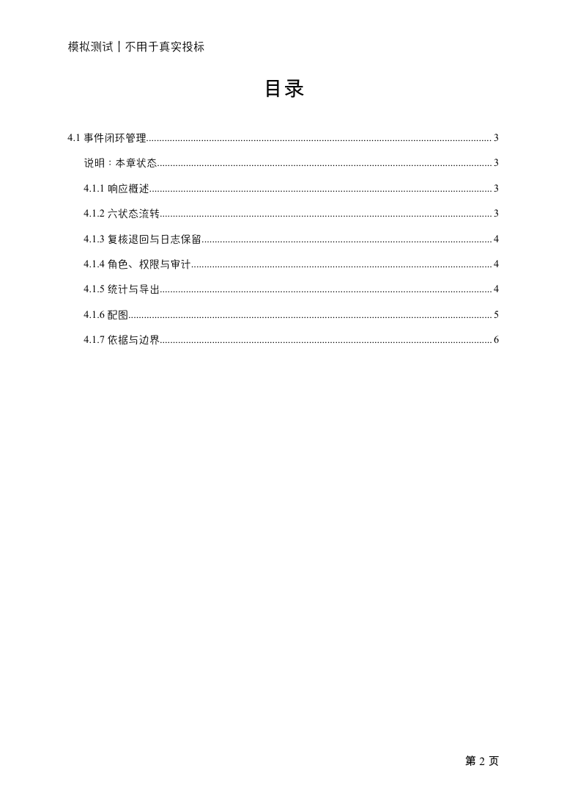
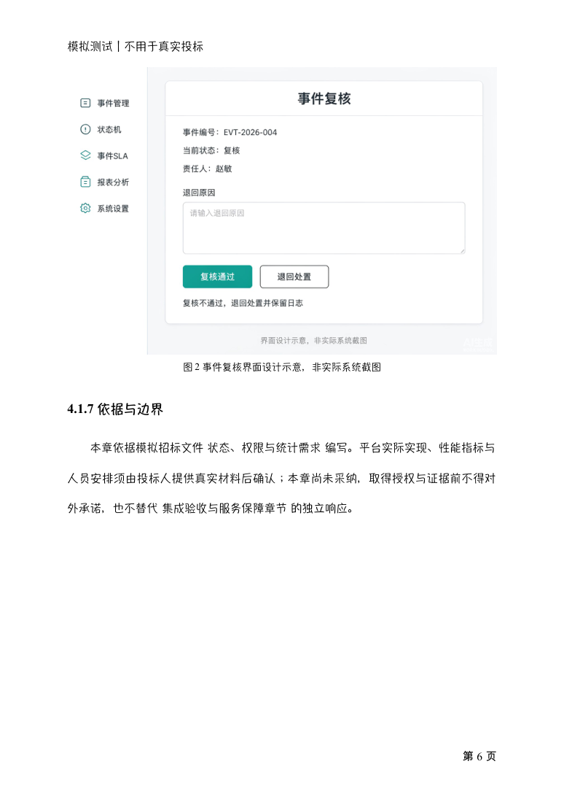

可编辑 Word 与实际渲染的 PDF
六页单章样稿 · 九条目录链接 · 两张嵌入图片 · 非整本投标文件
下载并检查实际文件
样稿包括封面、已刷新的目录、章节正文、流程图和界面示意图。Mac Word 已保存重开并检查目录跳转；PDF 经 LibreOffice 转换后逐页检查。
分享版 Word 仅移除了修改者元数据，文档 XML 与媒体不变；PDF 与已检查版本一致。格式检查通过不代表资格、材料或评分已通过。
目录页 · PDF 第 2 页

配图页 · PDF 第 6 页

此页面仅展示已保存的示例产物，不执行写作或评审。章节为候选稿，未正式采纳；不用于真实投标。